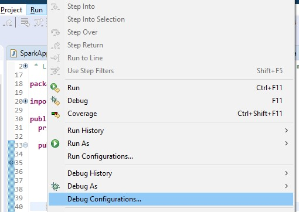
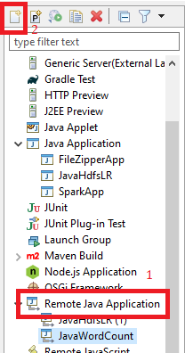
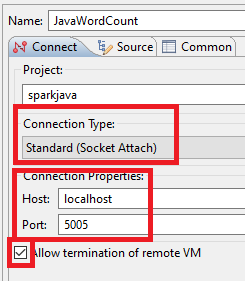
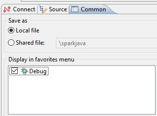

Java
Encryption using AES
File pom.xml
<!-- https://mvnrepository.com/artifact/commons-codec/commons-codec -->
<dependency>
<groupId>commons-codec</groupId>
<artifactId>commons-codec</artifactId>
<version>1.11</version>
</dependency>
import javax.crypto.Cipher;
import javax.crypto.spec.IvParameterSpec;
import javax.crypto.spec.SecretKeySpec;
import org.apache.commons.codec.binary.Base64;
public class Encryption {
private static final String KEY = "Bar12345Bar12345"; // 128 bit key
private static final String INIT_VECTOR = "RandomInitVector"; // 16 bytes IV
public static String encrypt(String key, String initVector, String value) {
try {
IvParameterSpec iv = new IvParameterSpec(initVector.getBytes("UTF-8"));
SecretKeySpec skeySpec = new SecretKeySpec(key.getBytes("UTF-8"), "AES");
Cipher cipher = Cipher.getInstance("AES/CBC/PKCS5PADDING");
cipher.init(Cipher.ENCRYPT_MODE, skeySpec, iv);
byte[] encrypted = cipher.doFinal(value.getBytes());
return Base64.encodeBase64String(encrypted);
} catch (Exception ex) {
ex.printStackTrace();
}
return null;
}
public static String decrypt(String key, String initVector, String encrypted) {
try {
IvParameterSpec iv = new IvParameterSpec(initVector.getBytes("UTF-8"));
SecretKeySpec skeySpec = new SecretKeySpec(key.getBytes("UTF-8"), "AES");
Cipher cipher = Cipher.getInstance("AES/CBC/PKCS5PADDING");
cipher.init(Cipher.DECRYPT_MODE, skeySpec, iv);
byte[] original = cipher.doFinal(Base64.decodeBase64(encrypted));
return new String(original);
} catch (Exception ex) {
ex.printStackTrace();
}
return null;
}
public static String encrypt(String value) {
return encrypt(KEY, INIT_VECTOR, value);
}
public static String decrypt(String value) {
return decrypt(KEY, INIT_VECTOR, value);
}
}
Send Http request
public static String sendHttpRequest(String url, String method, HashMap<String, String> params, String data) {
HttpURLConnection connection = null;
try {
// Create connection
URL urlObj = new URL(url);
connection = (HttpURLConnection) urlObj.openConnection();
if (method != null && !"get".equalsIgnoreCase(method)) {
connection.setRequestMethod(method);
}
/*
* connection.setRequestProperty("Content-Type",
* "application/x-www-form-urlencoded");
*/
/*
* connection.setRequestProperty("Content-Length",
* Integer.toString(urlParameters.getBytes().length));
* connection.setRequestProperty("Content-Language", "en-US");
*/
if (params != null && !params.isEmpty()) {
Set<String> keySet = params.keySet();
for(String key: keySet) {
if(Utils.isNullOrEmpty(key)) {
continue;
}
String value = params.get(key);
connection.setRequestProperty(key, value);
}
}
connection.setUseCaches(false);
// Send request
if ("POST".equals(method) || "post".equals(method)) {
connection.setDoOutput(true);
DataOutputStream wr = new DataOutputStream(connection.getOutputStream());
if (data != null) {
wr.writeBytes(data);
}
wr.close();
}
// Get Response
InputStream is = connection.getInputStream();
BufferedReader rd = new BufferedReader(new InputStreamReader(is));
StringBuilder response = new StringBuilder(); // or StringBuffer if Java version 5+
String line;
while ((line = rd.readLine()) != null) {
response.append(line);
response.append('\r');
}
rd.close();
return response.toString();
} catch (IOException e) {
try {
InputStream is = connection.getErrorStream();
BufferedReader rd = new BufferedReader(new InputStreamReader(is));
StringBuilder response = new StringBuilder();
String line;
while ((line = rd.readLine()) != null) {
response.append(line);
response.append('\r');
}
rd.close();
return response.toString();
} catch (Exception e2) {
e2.printStackTrace();
return null;
}
} catch (Exception e) {
e.printStackTrace();
return null;
} finally {
if (connection != null) {
connection.disconnect();
}
}
}
public static String sendGetRequest(String url, HashMap<String, String> params) {
return sendHttpRequest(url, "GET", params, null);
}
public static String sendGetRequest(String url) {
return sendHttpRequest(url, "GET", null, null);
}
public static String sendPostRequest(String url, HashMap<String, String> params, String data) {
return sendHttpRequest(url, "POST", params, data);
}
public static void main(String[] args) {
System.out.println(sendPostRequest("http://localhost:8080/mavenTest3/TestServlet", null, null));
}
UTF 8 Encoding
// Send request
if ("POST".equals(method) || "post".equals(method)) {
connection.setDoOutput(true);
BufferedWriter bw = new BufferedWriter(new OutputStreamWriter(connection.getOutputStream(), "UTF-8"));
if (data != null) {
bw.write(data);
}
bw.flush();
bw.close();
}
// Get Response
InputStream is = connection.getInputStream();
BufferedReader rd = new BufferedReader(new InputStreamReader(is, "UTF-8"));
StringBuilder response = new StringBuilder();
Send multipart file
import java.io.BufferedReader;
import java.io.File;
import java.io.FileInputStream;
import java.io.IOException;
import java.io.InputStream;
import java.io.InputStreamReader;
import java.io.OutputStream;
import java.io.OutputStreamWriter;
import java.io.PrintWriter;
import java.net.HttpURLConnection;
import java.net.URL;
import java.net.URLConnection;
import java.util.ArrayList;
import java.util.HashMap;
import java.util.List;
import java.util.Set;
/**
* This utility class provides an abstraction layer for sending multipart HTTP
* POST requests to a web server.
* @author
*
*/
public class MultipartUtils {
private final String boundary;
private static final String LINE_FEED = "\r\n";
private HttpURLConnection httpConn;
private String charset;
private OutputStream outputStream;
private PrintWriter writer;
/**
* This constructor initializes a new HTTP POST request with content type
* is set to multipart/form-data
* @param requestURL
* @param charset
* @throws IOException
*/
public MultipartUtils(String requestURL, String charset, HashMap<String, String> headers)
throws IOException {
this.charset = charset;
// creates a unique boundary based on time stamp
boundary = "===" + System.currentTimeMillis() + "===";
URL url = new URL(requestURL);
httpConn = (HttpURLConnection) url.openConnection();
httpConn.setUseCaches(false);
httpConn.setDoOutput(true); // indicates POST method
httpConn.setDoInput(true);
httpConn.setRequestProperty("Content-Type",
"multipart/form-data; boundary=" + boundary);
if (headers != null && !headers.isEmpty()) {
Set<String> keySet = headers.keySet();
for (String key : keySet) {
if (Utils.isNullOrEmpty(key)) {
continue;
}
String value = headers.get(key);
httpConn.setRequestProperty(key, value);
}
}
outputStream = httpConn.getOutputStream();
writer = new PrintWriter(new OutputStreamWriter(outputStream, charset),
true);
}
/**
* Adds a form field to the request
* @param name field name
* @param value field value
*/
public void addFormField(String name, String value) {
writer.append("--" + boundary).append(LINE_FEED);
writer.append("Content-Disposition: form-data; name=\"" + name + "\"")
.append(LINE_FEED);
writer.append("Content-Type: text/plain; charset=" + charset).append(
LINE_FEED);
writer.append(LINE_FEED);
writer.append(value).append(LINE_FEED);
writer.flush();
}
/**
* Adds a upload file section to the request
* @param fieldName name attribute in <input type="file" name="..." />
* @param uploadFile a File to be uploaded
* @throws IOException
*/
public void addFilePart(String fieldName, File uploadFile)
throws IOException {
String fileName = uploadFile.getName();
writer.append("--" + boundary).append(LINE_FEED);
writer.append(
"Content-Disposition: form-data; name=\"" + fieldName
+ "\"; filename=\"" + fileName + "\"")
.append(LINE_FEED);
writer.append(
"Content-Type: "
+ URLConnection.guessContentTypeFromName(fileName))
.append(LINE_FEED);
writer.append("Content-Transfer-Encoding: binary").append(LINE_FEED);
writer.append(LINE_FEED);
writer.flush();
FileInputStream inputStream = new FileInputStream(uploadFile);
byte[] buffer = new byte[4096];
int bytesRead = -1;
while ((bytesRead = inputStream.read(buffer)) != -1) {
outputStream.write(buffer, 0, bytesRead);
}
outputStream.flush();
inputStream.close();
writer.append(LINE_FEED);
writer.flush();
}
/**
* Adds a header field to the request.
* @param name - name of the header field
* @param value - value of the header field
*/
public void addHeaderField(String name, String value) {
writer.append(name + ": " + value).append(LINE_FEED);
writer.flush();
}
/**
* Completes the request and receives response from the server.
* @return a list of Strings as response in case the server returned
* status OK, otherwise an exception is thrown.
* @throws IOException
*/
public List<String> send() throws IOException {
List<String> response = new ArrayList<String>();
writer.append(LINE_FEED).flush();
writer.append("--" + boundary + "--").append(LINE_FEED);
writer.close();
// checks server's status code first
int status = httpConn.getResponseCode();
if (status == HttpURLConnection.HTTP_OK) {
BufferedReader reader = new BufferedReader(new InputStreamReader(
httpConn.getInputStream()));
String line = null;
while ((line = reader.readLine()) != null) {
response.add(line);
}
reader.close();
httpConn.disconnect();
} else {
InputStream is = httpConn.getErrorStream();
BufferedReader reader = new BufferedReader(new InputStreamReader(is));
String line;
StringBuilder builder = new StringBuilder();
while ((line = reader.readLine()) != null) {
builder.append(line);
builder.append("\r\n");
}
reader.close();
httpConn.disconnect();
throw new IOException("Server returned non-OK status: " + status + "\r\n"+builder.toString());
}
return response;
}
}
String charset = "UTF-8";
File uploadFile1 = new File("D:/NewsProject.war");
//String requestURL = "http://localhost:8081/deploymanager/deploy/";
String requestURL = "https://webgaddeployserver.azurewebsites.net/deploymanager/deploy/";
try {
MultipartUtils multipart = new MultipartUtils(requestURL, charset, header);
//multipart.addHeaderField("Authorization", "Basic " + basicAuthorization);
multipart.addFormField("deployPath", "/newsreader");
multipart.addFilePart("warfile", uploadFile1);
List<String> response = multipart.send();
System.out.println("SERVER REPLIED:");
for (String line : response) {
System.out.println(line);
}
return;
} catch (Exception e) {
e.printStackTrace();
}
Read property value in resource file
public static String readPropertyValue(String propertyFileName, String key) {
try {
ClassLoader classloader = Thread.currentThread().getContextClassLoader();
InputStream is = classloader.getResourceAsStream(propertyFileName);
Properties properties = new Properties();
properties.load(is);
return properties.getProperty(key);
} catch (Exception e) {
e.printStackTrace();
return "";
}
}
InputStream to String
public static String inputStreamToString(InputStream is) throws IOException {
final int bufferSize = 1024;
final char[] buffer = new char[bufferSize];
final StringBuilder out = new StringBuilder();
Reader in = new InputStreamReader(is, "UTF-8");
for (;;) {
int rsz = in.read(buffer, 0, buffer.length);
if (rsz < 0)
break;
out.append(buffer, 0, rsz);
}
return out.toString();
}
BufferedReader to String
public static String bufferedReaderToString(BufferedReader reader) throws IOException {
StringBuffer jb = new StringBuffer();
String line = null;
while ((line = reader.readLine()) != null) {
jb.append(line);
}
return jb.toString();
}
Add local jar file
Copy jar file to lib\a.jar
File pom.xml, add to <build>
<plugins>
<plugin>
<groupId>org.apache.maven.plugins</groupId>
<artifactId>maven-install-plugin</artifactId>
<version>2.5.2</version>
<executions>
<execution>
<phase>initialize</phase>
<goals>
<goal>install-file</goal>
</goals>
<configuration>
<file>${basedir}/lib/a.jar</file>
<groupId>vn.com.webgad.library</groupId>
<artifactId>webgad-library</artifactId>
<version>0.0.1-SNAPSHOT</version>
<packaging>jar</packaging>
</configuration>
</execution>
</executions>
</plugin>
</plugins>
<pluginManagement>
<plugins>
<!--This plugin's configuration is used to store Eclipse m2e settings only. It has no influence on the Maven build itself.-->
<plugin>
<groupId>org.eclipse.m2e</groupId>
<artifactId>lifecycle-mapping</artifactId>
<version>1.0.0</version>
<configuration>
<lifecycleMappingMetadata>
<pluginExecutions>
<pluginExecution>
<pluginExecutionFilter>
<groupId>
org.apache.maven.plugins
</groupId>
<artifactId>
maven-install-plugin
</artifactId>
<versionRange>
[2.5.2,)
</versionRange>
<goals>
<goal>install-file</goal>
</goals>
</pluginExecutionFilter>
<action>
<ignore></ignore>
</action>
</pluginExecution>
</pluginExecutions>
</lifecycleMappingMetadata>
</configuration>
</plugin>
</plugins>
</pluginManagement>
Add to dependencies
<dependency>
<groupId>vn.com.webgad.library</groupId>
<artifactId>webgad-library</artifactId>
<version>0.0.1-SNAPSHOT</version>
</dependency>
Api return file
@RequestMapping(value="/{id}/credential", method = RequestMethod.GET, produces = MediaType.APPLICATION_OCTET_STREAM_VALUE)
public ResponseEntity<byte[]> getCredential(@PathVariable String id, HttpServletRequest request) {
try {
String content ="abc";
HttpHeaders headers = new HttpHeaders();
headers.setContentDisposition(ContentDisposition.parse("attachment; filename=\"webgadSecret.json\""));
ResponseEntity<byte[]> responseEntity = new ResponseEntity<>(content.getBytes(), headers, HttpStatus.OK);
return responseEntity;
} catch (Exception e) {
e.printStackTrace();
throw new BusinessException(MessageConst.E_UNEXPECTED_ERROR, HttpServletResponse.SC_INTERNAL_SERVER_ERROR);
}
}
Debug remote application in Eclipse
Debug general application
java -Xdebug -Xrunjdwp:transport=dt_socket,address=8998,server=y -jar myapp.jar
Debug Spark application running Locally
Add config:
agentlib:jdwp=transport=dt_socket,server=y,suspend=y,address=5005
For example:
spark-submit --master local --conf spark.driver.extraJavaOptions=-agentlib:jdwp=transport=dt_socket,server=y,suspend=y,address=5005 --class org.apache.spark.examples.JavaWordCount spark-examples_2.12-3.0.1.jar
Debug Spark application running on Remote server
Run command:
export SPARK_SUBMIT_OPTS=-agentlib:jdwp=transport=dt_socket,server=y,suspend=y,address=5050
Configure Eclipse
- Go to Run -> Debug Configurations 
- Create a new Remote Java Application configuration 
- Configure the remote application 
- If you would like to have this launch configuration in your favorites menu, In tab Common, check Debug 